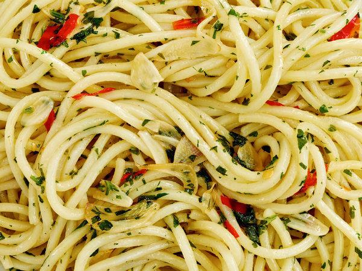

Aglio e Olio

Aglio e Olio; a popular Neapolitan late-night dish
Aglio e Olio is a traditional Italian pasta dish from Naples
It is a typical dish of Neapolitan cuisine that is widely
popular with late-night crowds. This popularity can be
attributed to it being simple to prepare and the fact that
it makes use of inexpensive, readily available ingredients
that have long shelf lives in a pantry.
Simple and quick in its preperation and big in umami, Aglio e
Olio is popular late-night snack for revelers returning home
after a night out. The dish even makes for an excellent
hangover breakfast if any leftovers remain.
- olive oil
- pasta (typically spaghetti)
- garlic
- red pepper flakes
- fresh parsley
- Parmigiano-Reggiano
- salt
- Bring large pot of water to a boil add salt and pasta
- Heat olive oil over medium heat and saute garlic
- Add red pepper flakes and saute for an additional minute
- Scoop some pasta water from pot and add to garlic and oil
- Boil mixture and add salt reducing by a third
- Add drained pasta and remove from heat
- Add parsley and Parmigiano-Reggiano to taste
- Serve warm with extra cheese on the side